.gallery {
  margin-top: 1.5rem;
  display: grid;
  gap: 1.5rem;
}

@media (min-width: 768px) {
  .gallery {
    grid-template-columns: repeat(3, minmax(0, 1fr));
  }
}

.gallery figure {
  margin: 0;
  background: #ffffff;
  border-radius: 1rem;
  border: 1px solid #e5e7eb;
  padding: 1rem;
  box-shadow: 0 10px 25px rgba(15, 23, 42, 0.06);
}

.gallery img {
  width: 100%;
  border-radius: 0.75rem;
  display: block;
}

.gallery figcaption {
  margin-top: 0.75rem;
  font-size: 0.9rem;
  color: #4b5563;
}


<div class="gallery">
  <figure>
    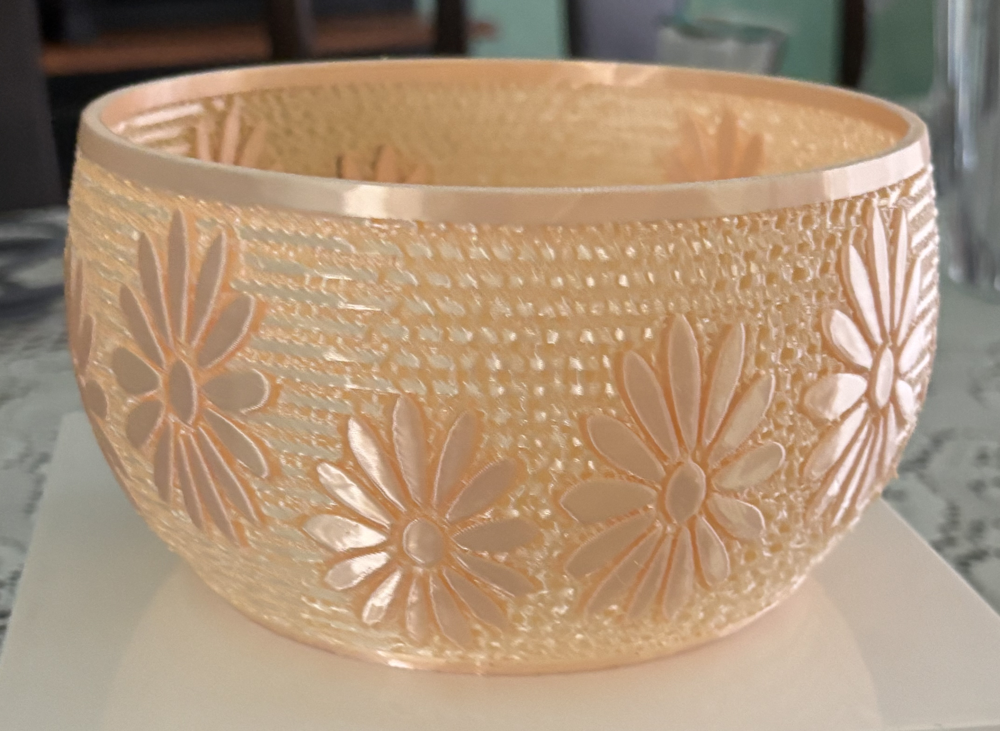
    <figcaption>Specialanpassad reservdel/fäste i PETG för verktyg och utrustning.</figcaption>
  </figure>
  <figure>
    
    <figcaption>Detaljerad figur i PLA, redo för slipning och målning.</figcaption>
  </figure>
  <figure>
    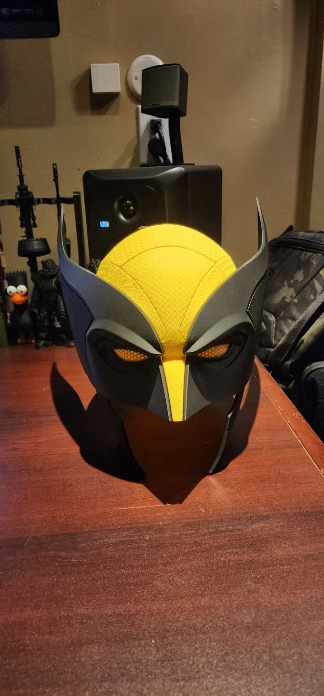
    <figcaption>Batch‑utskrift av flera delar i ett och samma jobb.</figcaption>
  </figure>
  <figure>
    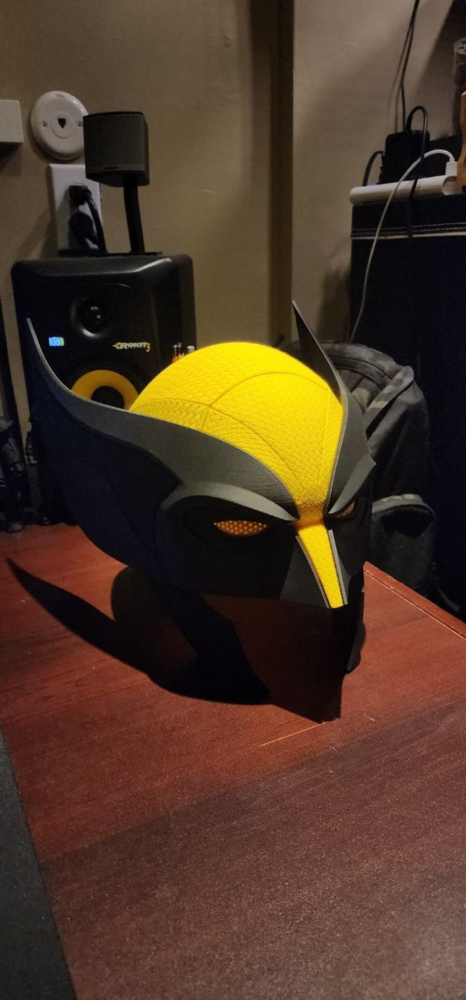
    <figcaption>Utskrivna delar direkt från skrivaren före efterbehandling.</figcaption>
  </figure>
  <figure>
    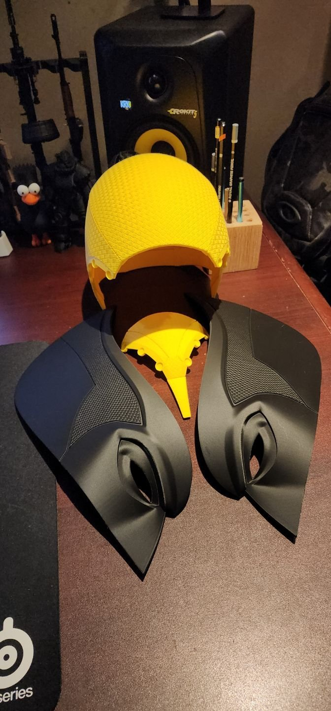
    <figcaption>Delar visade från flera vinklar för att visa detaljnivå.</figcaption>
  </figure>
  <figure>
    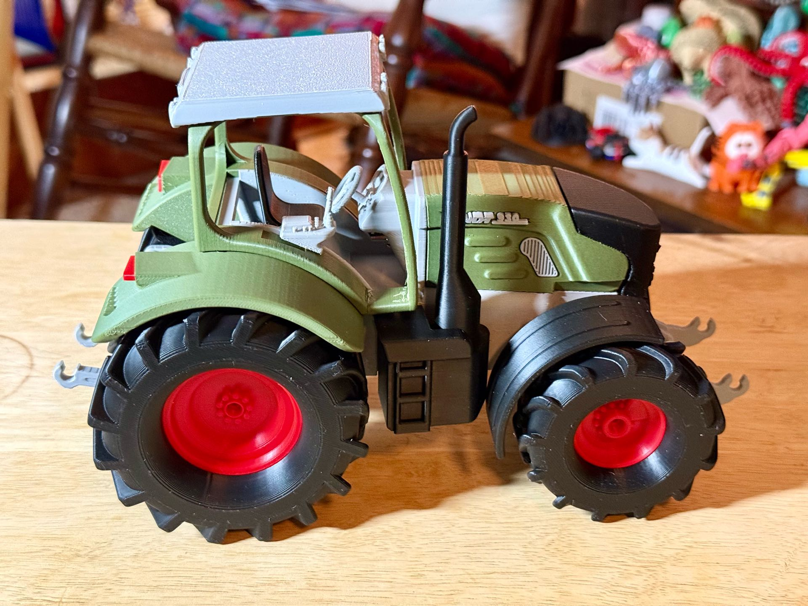
    <figcaption>Projekt utskrivet i PLA, med fokus på skarpa detaljer.</figcaption>
  </figure>
  <figure>
    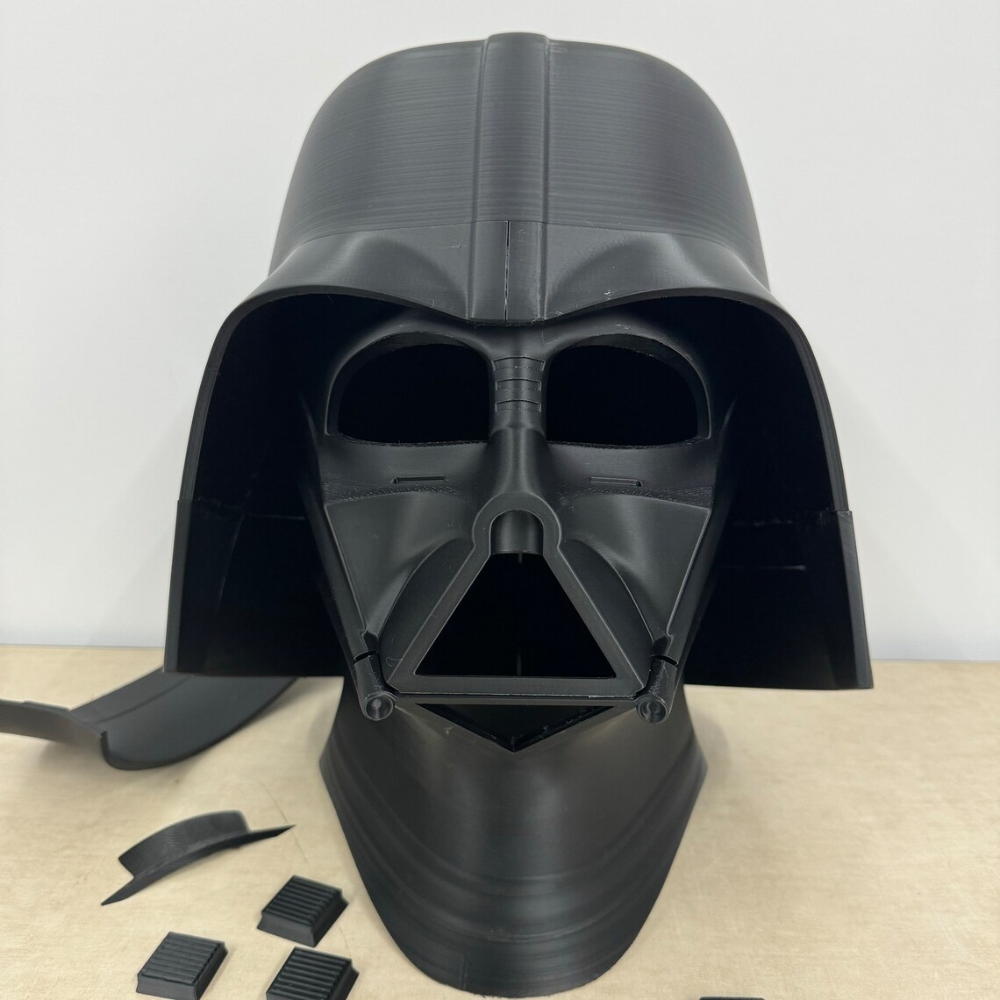
    <figcaption>Hjälm/figur‑modell för cosplay eller display.</figcaption>
  </figure>
  <figure>
    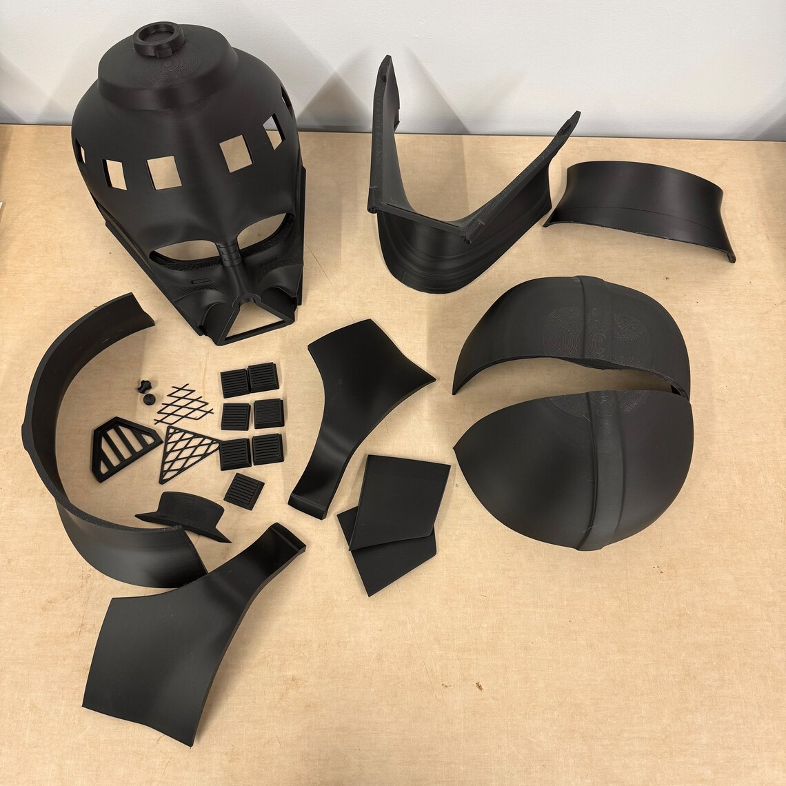
    <figcaption>Samma typ av modell sedd ur annan vinkel.</figcaption>
  </figure>
  <figure>
    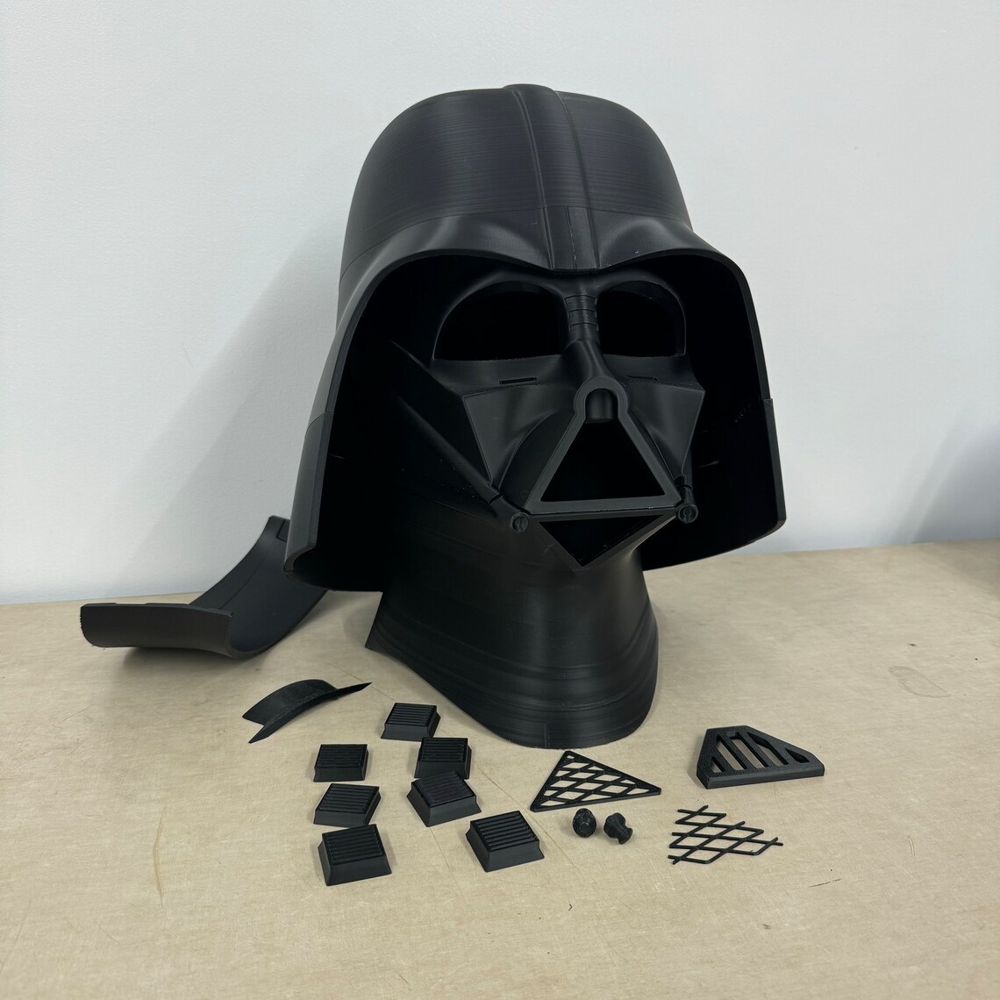
    <figcaption>Rustning/hjälm‑del för kostymbygge.</figcaption>
  </figure>
  <figure>
    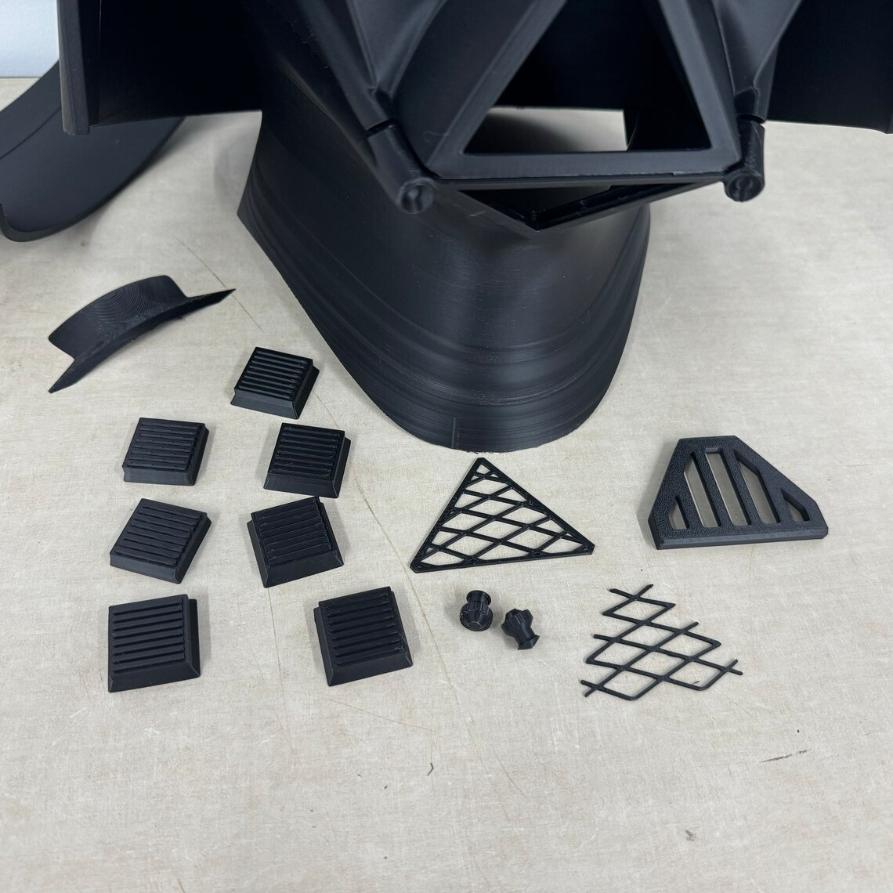
    <figcaption>Flera delar för cosplay‑ eller prop‑bygge.</figcaption>
  </figure>
  <figure>
    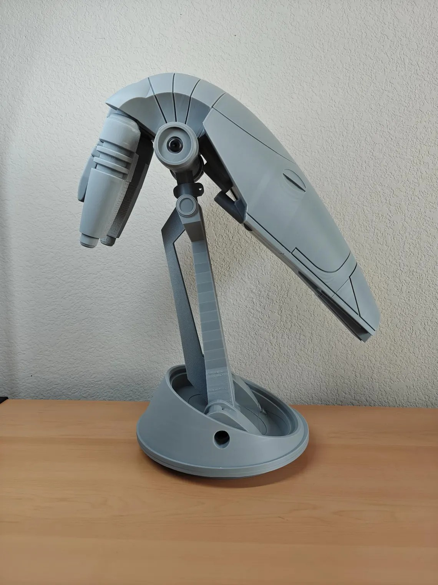
    <figcaption>Hjälmdelar utskrivna separat för enkel målning och montering.</figcaption>
  </figure>
  <figure>
    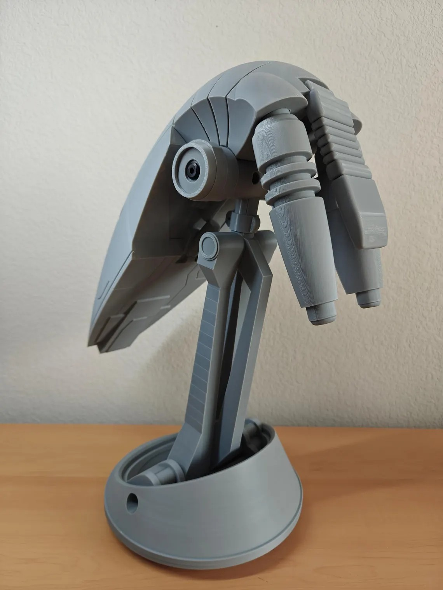
    <figcaption>Hjälm i sektioner, designad för att passa på konsument‑skrivare.</figcaption>
  </figure>
  <figure>
    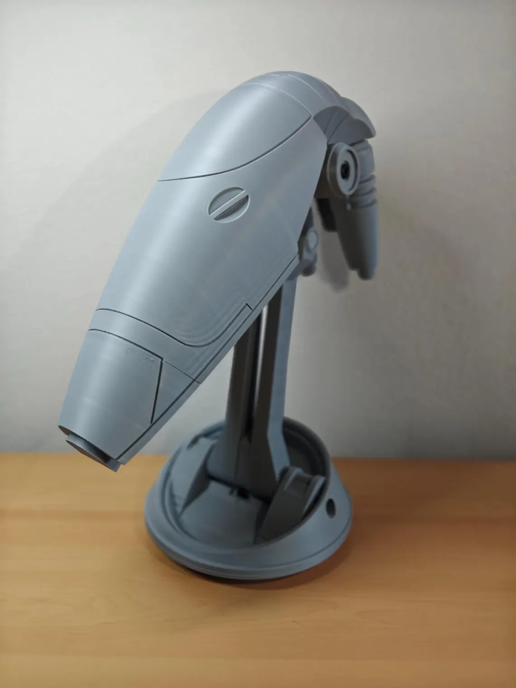
    <figcaption>Flera hjälmar/delar uppställda tillsammans.</figcaption>
  </figure>
  <figure>
    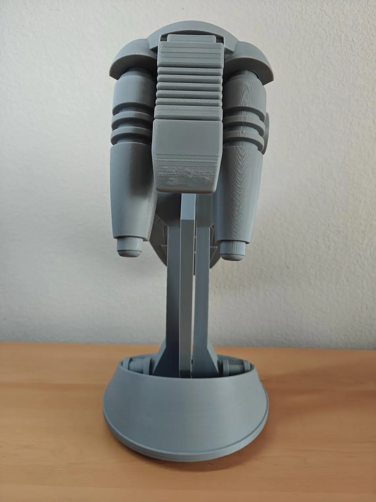
    <figcaption>Färdigmonterat objekt, redo för användning eller utställning.</figcaption>
  </figure>
</div>
